Cómo ponerlo en marcha con el SharePoint de la empresa, abrirlo en cada computadora, registrar la jornada, entender el saldo de horas y de vacaciones, pedir ausencias, recibir avisos por correo y administrar al equipo.
Contenido
Saldo de horas
Se ve cómo se calcula y cuándo cambia«Mis horas» explica el saldo con sus números. El día de hoy cuenta al registrar la primera actividad, y la vista Semana muestra el saldo al cierre de cada día.
Vacaciones
Ningún día aprobado se pierde de vistaSe ve qué vacaciones se descuentan, las que están en curso se reparten entre disfrutadas y por disfrutar, y el cierre de año ya no deja días sin descontar.
Avisos
Un correo al aprobar o rechazarVacaciones, permisos pagados con horas acumuladas y demás ausencias: la persona recibe el resultado y su saldo. Se configura en Configuración → Avisos por correo.
Actualizar
Mismos datos, mismo SharePointBasta con reemplazar el .exe en cada computadora. Los datos no cambian de formato y no hay que volver a conectar nada.
Nota
Amplía o matiza lo que se acaba de explicar.
Atención
Algo que suele causar errores o que no tiene vuelta atrás.
Buena práctica
Recomendación para que el registro sea fiel y no dé trabajo después.
Las secciones marcadas NUEVO 3.1 son nuevas o cambiaron en esta versión.
Capítulo 1
Se hace una sola vez para toda la empresa. Después, cada computadora nueva solo necesita el programa y el enlace de la carpeta (capítulo 2).
Lo hace el administrador de Microsoft 365 de la empresa, en unos diez minutos. Permite que el programa lea y guarde en SharePoint con la cuenta de cada persona, y solo en lo que esa persona ya puede ver. El mismo paso a paso está dentro del programa, en el enlace Ver las instrucciones para el administrador de la guía de la primera vez.
http://localhost. Pulse Registrar.Detalle técnico
Los permisos son delegados: el programa nunca actúa por su cuenta ni ve más que la persona que lo usa.
La contraseña de Microsoft se escribe en la página de Microsoft, nunca en el programa, y aplican la
verificación en dos pasos y las políticas de acceso de la empresa. Si se desea, el identificador puede
venir incluido dentro del .exe para que nadie tenga que escribirlo (variable MAJERIE_CLIENTE_ID
al compilar con empaquetar.py).
La primera computadora que se conecta a la carpeta vacía (capítulo 2) termina la guía con este paso. Hágalo en la computadora donde funcionaba la versión anterior: el sistema la detecta y ofrece subir sus datos.
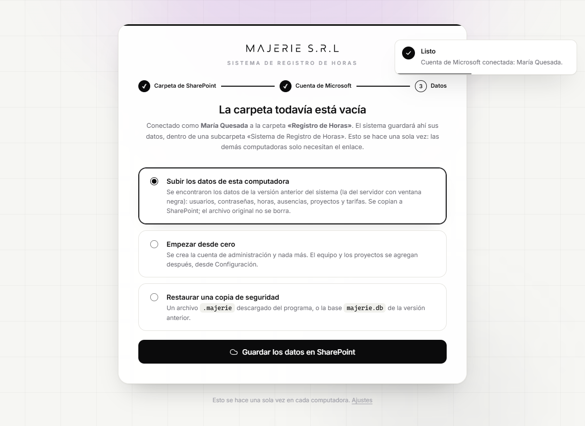
Atención
Antes de subir los datos, cierre la ventana negra de la versión anterior y no la vuelva a usar: lo que se
anote ahí después ya no llegaría a SharePoint. La base vieja no se borra: queda apartada en la carpeta
version-anterior-subida-AAAA-MM-DD de esa computadora.
Capítulo 2
Necesita Windows 10 u 11, el archivo Sistema de Registro de Horas.exe, el enlace de la carpeta de SharePoint, su cuenta de Microsoft 365 de la empresa y su usuario y contraseña del sistema. El .exe no se instala: puede estar en el Escritorio, en Documentos o en una memoria USB.
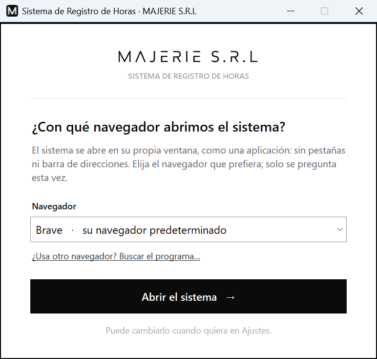
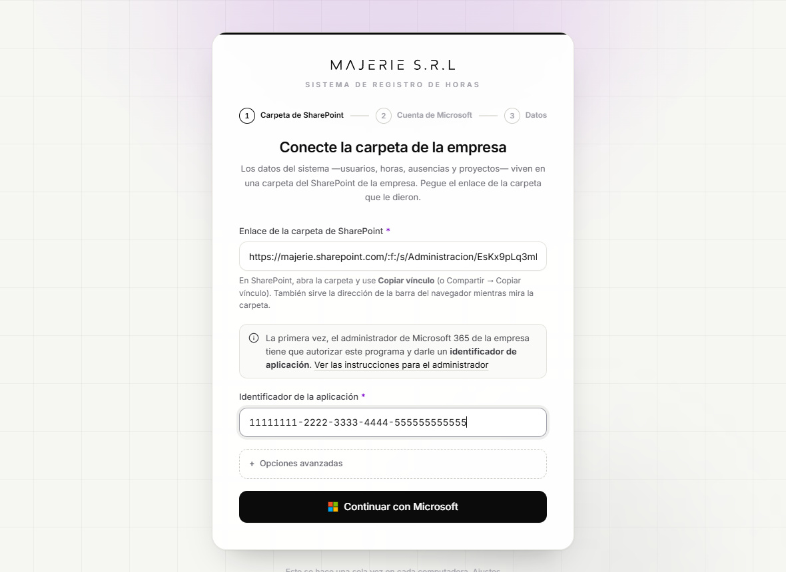
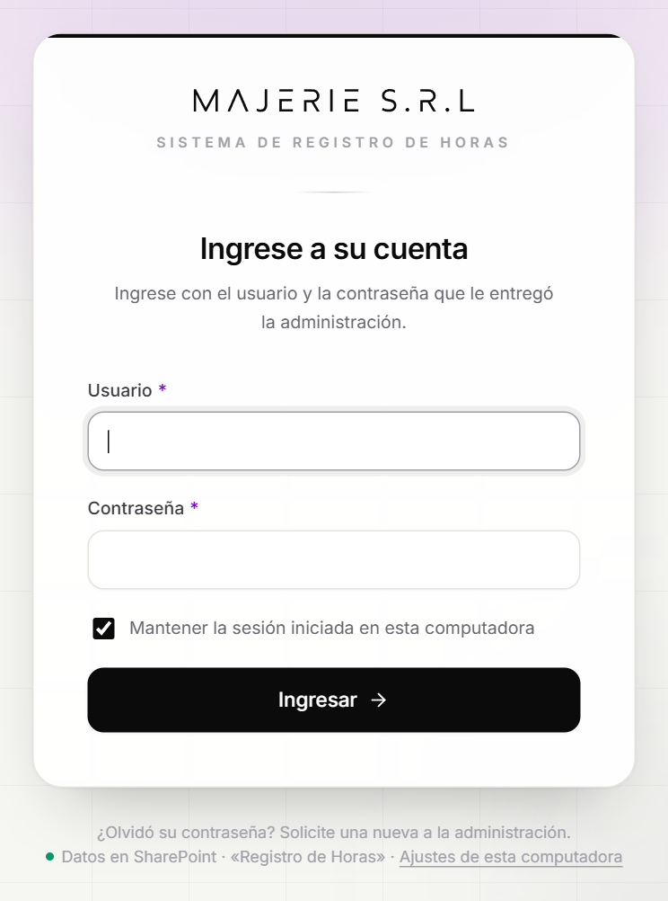
Capítulo 3
Con Mantener la sesión iniciada en esta computadora marcado, la sesión dura 30 días; sin marcar, 12 horas. Tras 8 intentos fallidos con un mismo usuario, el ingreso se frena 10 minutos. Si olvida su contraseña, la administración le asigna una nueva.
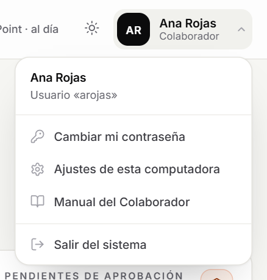
Junto al menú, la barra muestra el estado de la conexión: SharePoint · al día o hace 20 s cuando todo está bien; Guardando…, Trayendo cambios…, Sin conexión, Reconectar o Solo lectura cuando no. Cada cambio se guarda en SharePoint en el momento. Si dos personas guardan a la vez, se guardan las dos cosas.
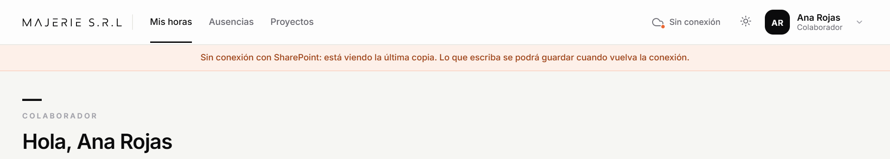
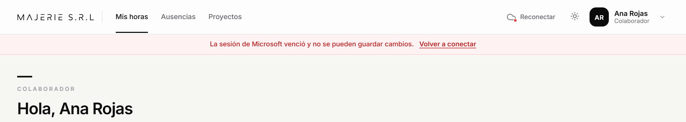
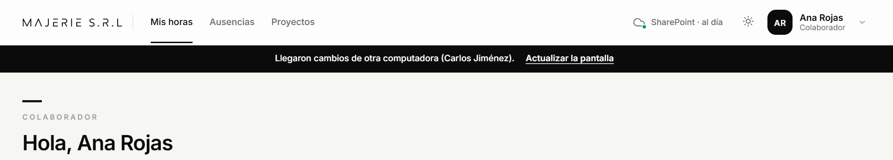
Cuando la administración aprueba o rechaza una solicitud suya —vacaciones, un permiso pagado con horas acumuladas o cualquier otra ausencia— le llega un correo con el resultado, la nota de la administración y su saldo actualizado. Ya no hace falta entrar a revisar. Para recibirlo, la administración debe tener los avisos activos y su ficha debe tener su correo (capítulo 5).
Capítulo 4
Se abre sola al ingresar. Arriba, cuatro indicadores: registros, horas acumuladas (su saldo), vacaciones disponibles y pendientes de aprobación. Debajo, el desglose del saldo y las vistas Día, Semana e Historial.
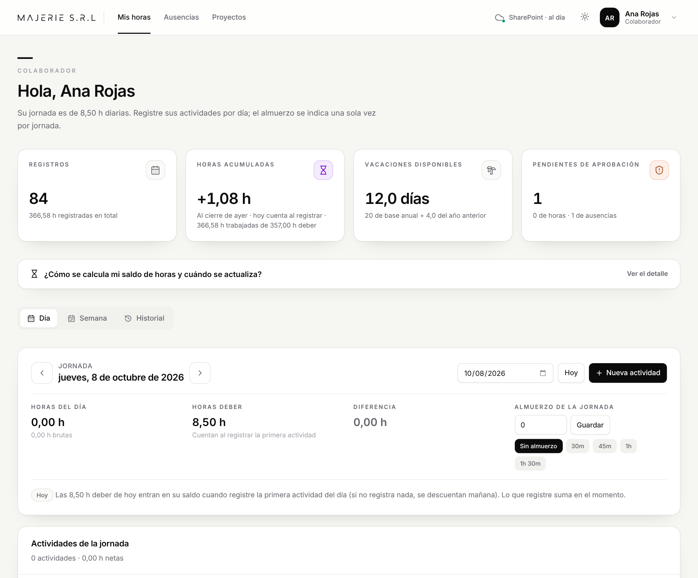
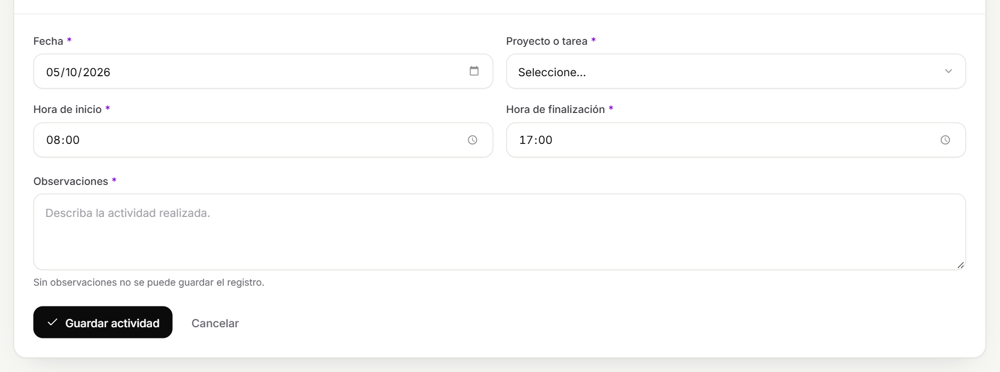
Se indica una sola vez por jornada, con los atajos (Sin almuerzo, 30m, 45m, 1h, 1h 30m) o en minutos, y se reparte solo entre las actividades del día en proporción a su duración.
| Antigüedad de la jornada | Al crear, editar o eliminar |
|---|---|
| Hasta 4 días | Se aplica de inmediato. |
| Más de 4 días | Queda Por aprobar y llega a la bandeja de la administración. Si se rechaza, todo vuelve a como estaba. |
Las horas acumuladas son su saldo: lo que lleva trabajado de más (positivo) o de menos (negativo) frente a su jornada. Se calcula así, siempre dentro de su periodo:
Saldo inicial + horas trabajadas − horas deber − horas usadas en permisos = horas acumuladas
El recuadro ¿Cómo se calcula mi saldo de horas y cuándo se actualiza? de «Mis horas» muestra esa cuenta con sus números. Ábralo cuando quiera revisar de dónde sale el saldo.
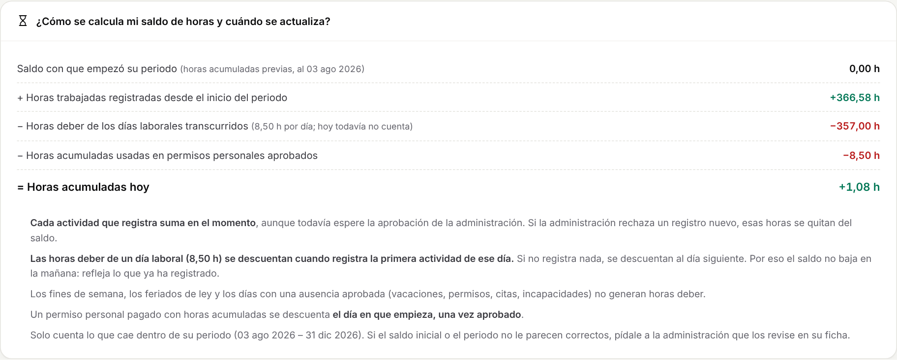
| Qué pasa | Qué hace el saldo |
|---|---|
| Empieza el día y todavía no registra nada | No cambia: muestra el saldo al cierre de ayer. El indicador dice «hoy cuenta al registrar». |
| Registra la primera actividad del díaEjemplo: 07:45 – 12:30 = 4,75 h | Entra la jornada de hoy: suma las 4,75 h y descuenta las 8,50 h deber del día. El saldo baja 3,75 h: es lo que le falta para completar el día. |
| Registra el resto de la jornada12:30 – 17:15 y 45 min de almuerzo | El día queda con 8,75 h netas: el saldo termina 0,25 h por encima del de ayer. |
| Un día laboral sin ningún registro | Sus horas deber se descuentan al día siguiente. Si lo completa después, el saldo se recupera en el momento. |
| Un registro que espera aprobación | Ya cuenta. Si la administración rechaza un registro nuevo, sus horas se quitan. |
| Fin de semana, feriado o ausencia aprobada | No genera horas deber: el saldo no se mueve. |
| Permiso personal pagado con horas acumuladas | Se descuenta el día en que empieza, una vez aprobado. Mientras espera aprobación, no se descuenta. |
Cada día muestra lo trabajado, las horas deber, la diferencia y el saldo al cierre del día. La semana arranca con el saldo real de la semana anterior, así que el último día coincide con «Horas acumuladas».
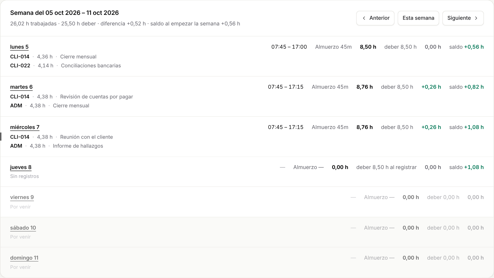
Buena práctica
Registre el mismo día. Un día laboral sin registro suma horas deber desde el día siguiente y baja su saldo hasta que lo complete.
En Ausencias: elija el tipo (vacaciones, permiso personal, cita médica, incapacidad u otra), las fechas, los días (el sistema propone los hábiles del rango y los vuelve a proponer cada vez que cambia las fechas; use 0,5 para medio día) y el motivo. Toda solicitud la aprueba la administración. Un permiso personal puede pagarse con horas acumuladas. Mientras esté pendiente, puede Retirarla.
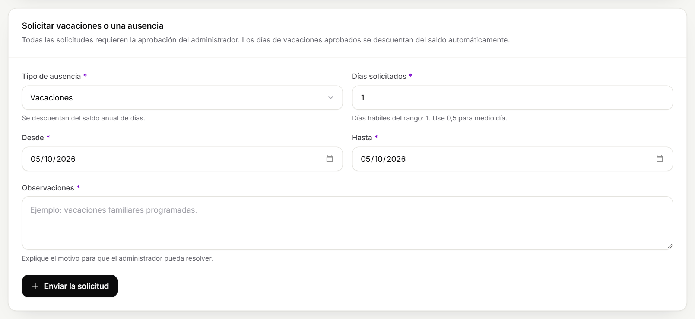
Base anual + acumulado del año anterior − días aprobados = días disponibles
«Aprobados» incluye los días ya disfrutados y los que están por disfrutar. Unas vacaciones en curso se reparten: los días hábiles que ya pasaron cuentan como disfrutados y el resto como por disfrutar. Las solicitudes pendientes se muestran aparte y todavía no se descuentan.
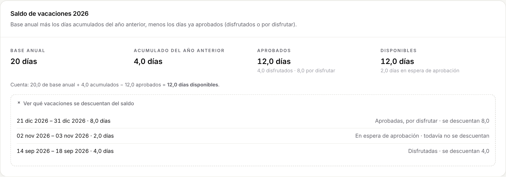
Nota
Si le quedaron días sin disfrutar de años anteriores y «Acumulado del año anterior» aparece en 0, pídale a la administración que los anote en su ficha. Si una solicitud muestra «el rango tiene N días hábiles», se pidieron menos días que los del rango: revísela con la administración.
Cuando su solicitud se aprueba o se rechaza, recibe un correo como este. Si no le llega, revise la carpeta de correo no deseado y que su ficha tenga su correo.
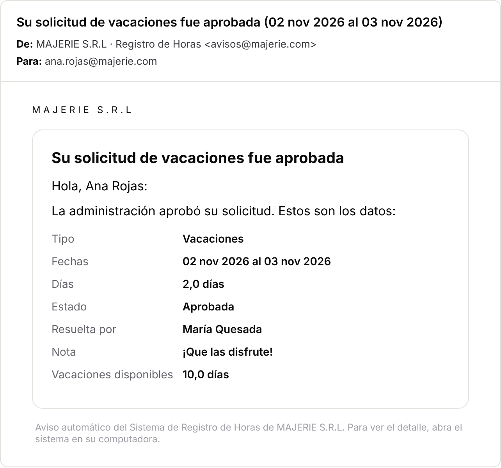
Los proyectos de la empresa los crea la administración y se ven en solo lectura. Con Nuevo proyecto puede crear los suyos (código, nombre y líder), que solo usted ve. Las tarifas no se ven desde este perfil.
Capítulo 5
La cuenta de administración la comparten María Quesada y Jérémie Surbeck. Al ingresar se elige quién la usa: ese nombre queda en cada aprobación, en el historial de cambios y en los avisos por correo. Se cambia desde el menú con Cambiar de identidad.
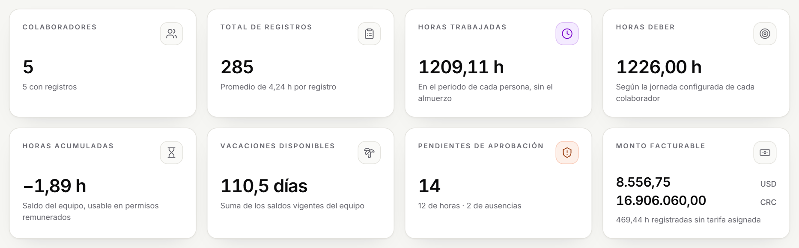
Debajo: los gráficos (horas por colaborador, estado de los registros y horas por proyecto), los saldos de cada persona, los filtros y el detalle de registros.
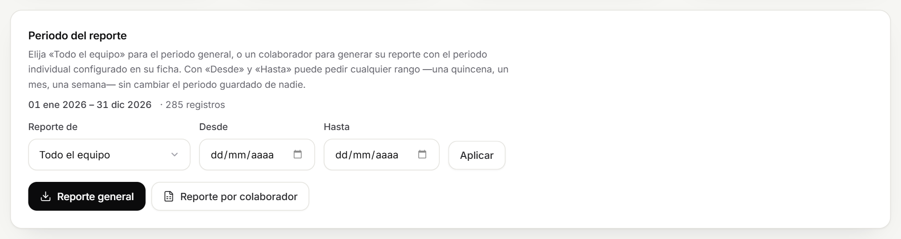
Reporte general: resumen, detalle de todos los registros y una hoja por colaborador con el control diario (horas, horas deber, diferencia y acumulado). Reporte por colaborador: el formato para facturar, con tarifa y monto por registro, y la hoja de proyectos. El acumulado de los reportes es el mismo que ve cada persona en «Mis horas».
Llegan todas las ausencias y los registros de horas con más de 4 días de antigüedad. Cada asunto explica qué se pide. Aprobar aplica el cambio; rechazar lo deja como estaba (un registro nuevo rechazado se descarta). Si dos personas resuelven lo mismo a la vez, vale la primera. Si los avisos por correo están activos, la persona recibe el resultado en cuanto la resolución queda guardada, y la pantalla confirma «Se avisó por correo a …».
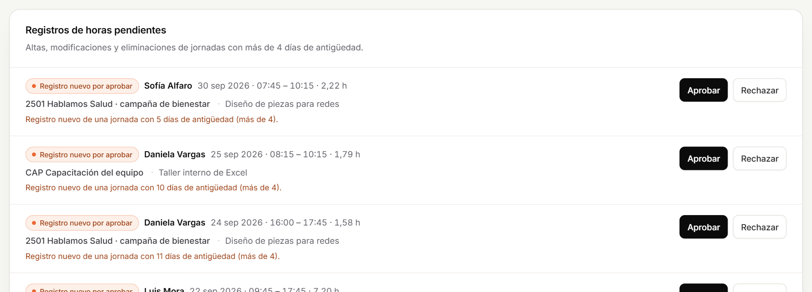
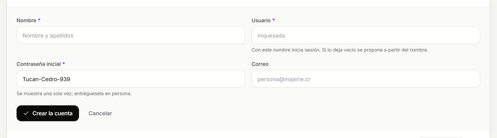
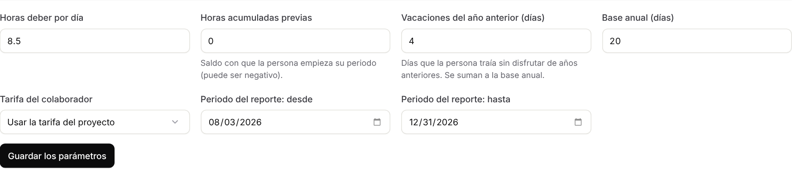
Trasladar saldo al año siguiente pasa los días disponibles a «vacaciones del año anterior» y, desde la fecha de corte, solo cuentan las vacaciones nuevas. Hágalo el 1 de enero o después: el sistema propone el 1 de enero del año en curso y ya no acepta fechas de corte futuras (antes, un corte adelantado dejaba sin descontar las vacaciones aprobadas entre ese día y el corte). Una vez hecho, la ficha indica que el año ya se cerró hasta el próximo enero.
Atención
Eliminar a una persona borra también sus registros, ausencias y proyectos. Si deja la empresa, desmarque Puede ingresar al sistema: no entra más y su historial se conserva.
Configure una sola vez la cuenta desde la que salen los avisos. Los ajustes quedan en SharePoint y los ven las dos personas de la administración; la contraseña, en cambio, se guarda solo en cada computadora.
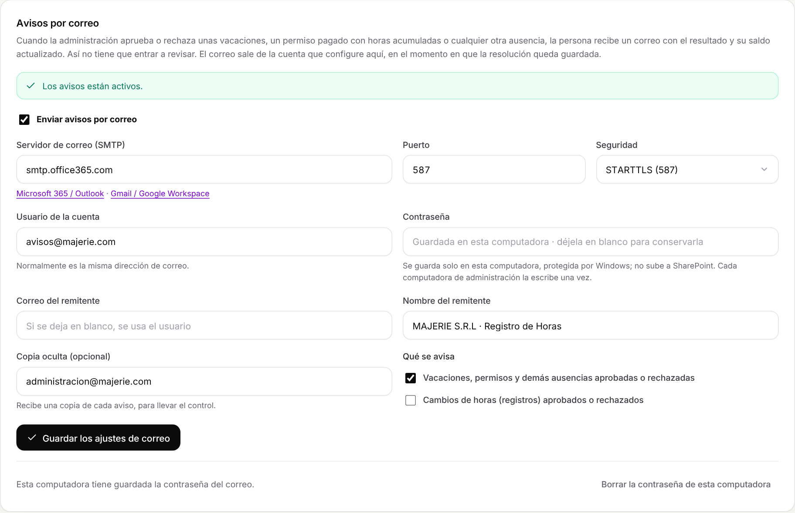
Atención · Microsoft 365
Para enviar por smtp.office365.com la cuenta de avisos debe tener activado el SMTP autenticado.
Lo activa quien administra Microsoft 365: Centro de administración → Usuarios activos → la cuenta → Correo →
Administrar aplicaciones de correo electrónico → marcar SMTP autenticado. Si no se activa, el
correo de prueba dirá que el servidor rechazó el usuario o la contraseña.
Detalle técnico
El aviso sale desde la computadora que aprueba, en el momento en que la aprobación quedó guardada en SharePoint: si el guardado no se pudo hacer, no sale ningún aviso, y si se repite por un cambio simultáneo sale uno solo. Un fallo del correo nunca deshace la aprobación: el motivo aparece en pantalla y en la lista de envíos de esa computadora. La contraseña se guarda protegida por Windows y no sube a SharePoint.
La cuenta de Microsoft que creó el sistema queda autorizada para recuperarla (se agregan más en Configuración → Seguridad). En una computadora conectada con esa cuenta: Ajustes → Copias de seguridad → Restablecer la contraseña de administración. El sistema muestra la nueva una sola vez; las horas y las demás cuentas no se tocan.
Capítulo 6
Cada computadora guarda solo su configuración, una copia de trabajo, su sesión de Microsoft y, en las de
administración, la contraseña del correo de avisos (ambas protegidas por Windows) en
%LOCALAPPDATA%\MAJERIE Registro de Horas. El programa solo atiende a la propia computadora: nadie
puede conectarse a él desde la red.
Detalle técnico
El cifrado protege de la curiosidad, no de alguien decidido a desarmar el programa: la protección de verdad son los permisos de la carpeta. Compártala solo con el equipo.
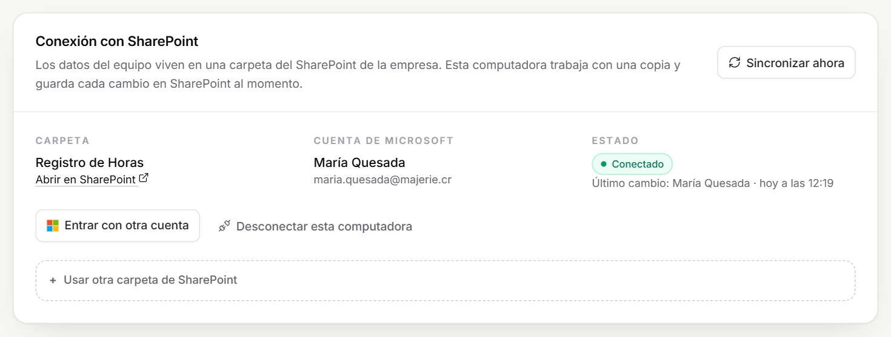
También: el tema (automático, claro u oscuro), el navegador de la ventana, las opciones avanzadas (identificador de la aplicación e inquilino) y, en Acerca del programa, el registro técnico para soporte.
Cada día, la primera computadora que abre el programa deja una copia en Respaldos. La administración las ve en Ajustes → Copias de seguridad → Ver y restaurar copias: descargar, restaurar una fecha o restaurar desde un archivo. Antes de restaurar se guarda la versión actual, por si acaso. SharePoint guarda además el historial de versiones de cada archivo.
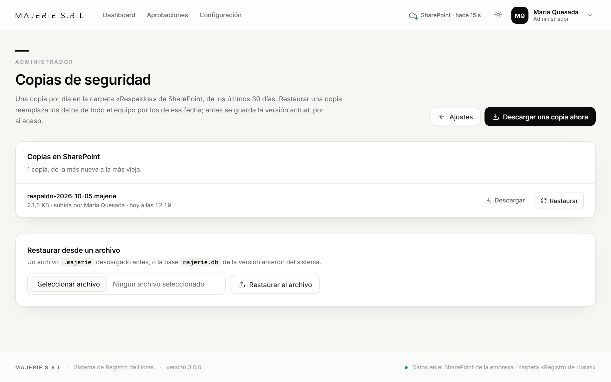
La administración puede activar en Ajustes un Excel que se actualiza solo en la carpeta del sistema, para verlo desde el celular. Viene apagado: esa carpeta la abre todo el equipo y el Excel trae horas, tarifas, montos y ausencias de todos. Actívelo solo si la carpeta es exclusiva de la administración.
La versión 3.1 no cambia el formato de los datos, así que puede convivir con computadoras que todavía tengan la 3.0. Aun así, actualice todas: solo la 3.1 envía los avisos por correo y muestra el saldo con la regla nueva del día de hoy. Cuando una versión futura sí cambie el formato, las computadoras con la versión vieja pasarán a solo lectura hasta actualizarse: así nadie daña datos que no entiende.
Capítulo 7
| Horas trabajadas | Fin − inicio de cada actividad, menos su parte del almuerzo del día (prorrateado según la duración). Ejemplo: 6 h y 2 h con 60 min de almuerzo → se descuentan 45 y 15 min. |
| Horas deber | La jornada esperada de cada día laboral (por ejemplo 8,50 h). No suman horas deber los fines de semana, los feriados de ley de Costa Rica (incluidos Jueves y Viernes Santo), los días de ausencia aprobada, los días que todavía no llegan ni los que quedan fuera del periodo de la persona. Un día laboral sin registro sí suma. El día de hoy suma desde que se registra su primera actividad; si no se registra nada, desde el día siguiente. |
| Horas acumuladasel saldo | Saldo previo + horas trabajadas − horas deber − horas usadas en permisos personales, todo dentro del periodo de la persona. No existen «horas extra»: existe este saldo. Un registro pendiente de aprobación ya cuenta. |
| Permiso pagado con horas | Las horas acumuladas que usa se descuentan el día en que empieza el permiso, una vez aprobado. Ese día no suma horas deber. |
| Vacaciones | Disponibles = base anual (20) + acumulado del año anterior − días aprobados (disfrutados y por disfrutar). Unas vacaciones en curso se reparten entre disfrutadas (días hábiles ya pasados) y por disfrutar. Las pendientes no se descuentan hasta que se aprueban. |
| Trasladar saldo | Pasa lo disponible al año siguiente con una fecha de corte que ya llegó (1 de enero o después). Las vacaciones anteriores al corte quedan incluidas en «acumulado del año anterior» y no se vuelven a descontar. |
| Ventana de aprobación | 4 días. Al mover un registro de fecha, cuenta la más antigua de las dos. |
| Tarifa | Se resuelve en cascada: la de la persona en ese proyecto → la del colaborador → la del proyecto. Un «sin tarifa» corta la cascada. Monto = horas trabajadas × tarifa. Las monedas (CRC, USD, EUR, CHF) nunca se suman entre sí. |
| Aviso por correo | Sale desde la computadora que resuelve, cuando la resolución ya quedó guardada en SharePoint. Va al correo de la ficha de la persona y, si se configuró, con copia oculta. |
Capítulo 8
| Lo que se ve | Qué significa y qué hacer |
|---|---|
| Doble clic y no pasa nada | Windows bloqueó el archivo descargado: clic derecho → Propiedades → Desbloquear → Aceptar. |
| «Windows protegió su PC» | Más información → Ejecutar de todas formas. |
| Vuelve a preguntar el navegador | El navegador elegido se desinstaló o cambió de lugar: elija otro. |
| «Usuario o contraseña incorrectos» | El usuario va en minúsculas. Si insiste, la administración asigna una contraseña nueva. |
| Sin conexión | Revise internet. Se ve la última copia; lo escrito queda en pantalla. |
| Reconectar / sesión de Microsoft vencida | Pulse Volver a conectar y entre con su cuenta de Microsoft. |
| Falta el archivo | Alguien movió o borró datos.majerie: recupérelo de la Papelera del sitio de SharePoint o restaure una copia (capítulo 6). |
| Solo lectura: «versión más nueva» | Actualice el programa en esta computadora. |
| El saldo no cuadra | Abra «¿Cómo se calcula mi saldo de horas…?» en Mis horas: muestra cada parte de la cuenta. Casi siempre hay días laborales sin registrar, un saldo inicial o un periodo mal anotados en la ficha. |
| «El saldo no bajó esta mañana» | Es lo esperado: el día de hoy cuenta cuando registra la primera actividad. |
| Me faltan días de vacaciones | Abra «Ver qué vacaciones se descuentan del saldo» en Ausencias. Si «Acumulado del año anterior» está en 0 y le quedaban días, la administración los anota en su ficha. |
| El traslado de vacaciones no acepta la fecha | La fecha de corte todavía no llega: haga el traslado el 1 de enero o después. |
| No me llegó el correo de aviso | Revise el correo no deseado. Confirme que su ficha tenga su correo, que los avisos estén activos y que la computadora que aprobó tenga la versión 3.1 y la contraseña guardada. |
| «El servidor rechazó el usuario o la contraseña» | Revise la contraseña. En Microsoft 365 active el SMTP autenticado de la cuenta; con verificación en dos pasos use una contraseña de aplicación. |
| «Esta computadora no tiene guardada la contraseña del correo» | Escríbala en Configuración → Avisos por correo. Se pide una vez en cada computadora de administración. |
| Un registro no genera monto | Algún nivel del tarifario está en «sin tarifa». |
Nota
Para soporte: Ajustes → Acerca del programa → Ver las últimas líneas muestra el registro técnico. Ante dudas sobre horas, vacaciones o aprobaciones, la referencia es la administración.
Manual de Usuario · Versión 3.1 · Octubre 2026 · Documento interno de MAJERIE S.R.L